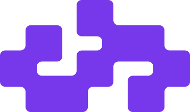

peacepipe04
The sound of the next chapter. Producing music, exploring new ideas, and keeping the creative thread of Fetch Quest alive.
ENTER THE SOUND
A home for the music.
A little chaos for the dancefloor.
Releases, remixes, experiments.
Find your next repeat.
Our releases, remixes and studio archive across every chapter. ARCHIVE COPY means the audio is saved with this site; PLATFORM EMBED means playback still depends on its original host. Some studio files are waiting for their artist credit or cover.
The sound of the next chapter. Producing music, exploring new ideas, and keeping the creative thread of Fetch Quest alive.
ENTER THE SOUNDThe world around the sound. From brand design to marketing campaigns, Raiko handles everything beyond music production. He is not currently producing music.
BRAND DESIGN / MARKETING / LABEL OPERATIONSThe project has dissolved into peacepipe04 and Raiko. The name is part of our history. The tracks are still here.
EXPLORE FETCH QUESTFrom school days in Astana
to a world built around sound.
We started making music together while studying at the Astana Kazakh Turkish High School for Gifted Boys. Epic Cheesy Toast was our first shared experiment: two school friends finding their way into electronic music.
We became Audionerds while living and studying separately in Turkey and Astana. The distance changed the way we worked, but the project kept us connected and the music kept moving forward.
We came back together to take our EDM project to the next level. We renamed it Fetch Quest and put more effort into the world around the music, with a stronger focus on design and marketing.
Fetch Quest has dissolved into peacepipe04 and Raiko. peacepipe04 continues producing music, while Raiko takes care of brand design, marketing campaigns, and everything beyond production. Chicken Balls is the home for the whole story, including the music from every chapter.
An independent home for electronic music, built around peacepipe04, the legacy of Fetch Quest, and Raiko’s creative direction.